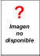

TÍTULO LIBRO |
AUTORES |
EDITORIAL, AÑO ... |
FOTO |
El Manual del Balance Social |
ANDI -Asociación de Empresarios Andinos, con el auspicio de la OIT |
ANDI - OIT, Bogotá, 2001 |
 |
Responsabilidad social de las empresas y salud laboral |
AGENCIA EUROPEA PARA LA SEGURIDAD Y SALUD EN EL TRABAJO |
Forum, revista n° 3, Agencia Europea para la Seguridad y Salud en el trabajo, Bilbao, 2002 |
|
Empresas que perduran. Principios básicos de las compañías con visión de futuro |
COLLINS JAMES C. y JERRY I. PORRAS |
Paidós, Barcelona, 1996 |
|
Libro Verde sobre Responsabilidad Social de las empresas |
COMISIÓN DE LAS COMUNIDADES EUROPEAS |
Comisión Europea, Bruselas, 2001 |
|
La responsabilidad de la empresa |
CANNON, TOM |
Traducción de Javier Serra, Ediciones Folio, Barcelona, 1994 |
|
People in Corporations: Ethical Responsabilities & Corporate Effectiveness |
ENDEBLE, GEORGE |
Kluwer Academic Publishers, 1998 |
|
Administración de la responsabilidad social corporativa |
FERNANDEZ GAGO, ROBERTO |
Thomson-Paraninfo, Colección negocios, Madrid 2005 |
|
La empresa que viene. Responsabilidad y acción social en la empresa del futuro |
FUNDACIÓN EMPRESA Y SOCIEDAD |
Fundación Empresa y Sociedad, Madrid, 2001 |
|
Sustainability Reporting Guidelines |
GLOBAL REPORTING INITIATIVE |
GRI, Boston-USA, 2002 |
|
La aportación de la empresa a la sociedad |
MELE, DOMÉNEC/ PASTOR, ALFREDO/ PÉREZ LÓPEZ, JUAN A. |
Biblioteca IESE de Gestión de empresas, Ediciones Folio, Barcelona, 1997 |
|
Responsabilidad social corporativa |
MORROS RIBERA, JORDI |
Fundación Confemetal, Madrid, 2005 |
|
Responsabilidad Social Corporativa: Tendencias empresariales en España |
PRICEWATERHOUSE COOPERS |
PricewaterhouseCoopers, Barcelona, 2003 |